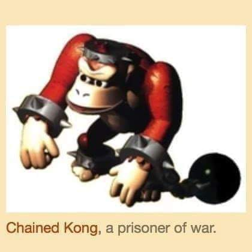
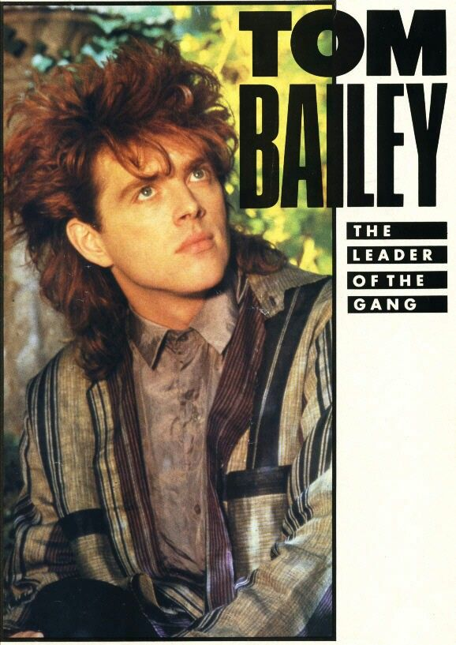

jamo hub
returnscrapbook




![halowe'en kitters](cats.JPG "qt kitters in festive garb, but also one dressed as his partner and she the inverse, this really has to say something profound about human psychology, to start with the cat symbolises the more discrete spiritual nature of man, as is attested by traditions, the fact that the two cats are dressed as eachother shows the interrelation of a man's anima and a woman;s animus, the black cat obviously representing the male figure and the white cat, representing the female figure, its especially relevant that theyre dressed up for halloween the traditional masquerade holiday for us westerners and of course it would ne that way, its the time when the borders between this world and the 'otherworld' or tbe spirit world are weaker, at least according to the traditional imagination, and so of course that;s when you'd see the strange and the bizarre. and jung knew what he was talking abut bucko, these aren't just arbritrary these are DEEP archetypes, at the bottom of the human psyche, though he;d disagree with freud. if i remember correctly though, freud did have an affinity for cats, and these are very cute")
we might just live in the best age that therer will be for a hundred years,, once society collapses, noone will have time to draw cute lil kitters bcos they be starving to death, hunting feral dogs with a spear to eat them.